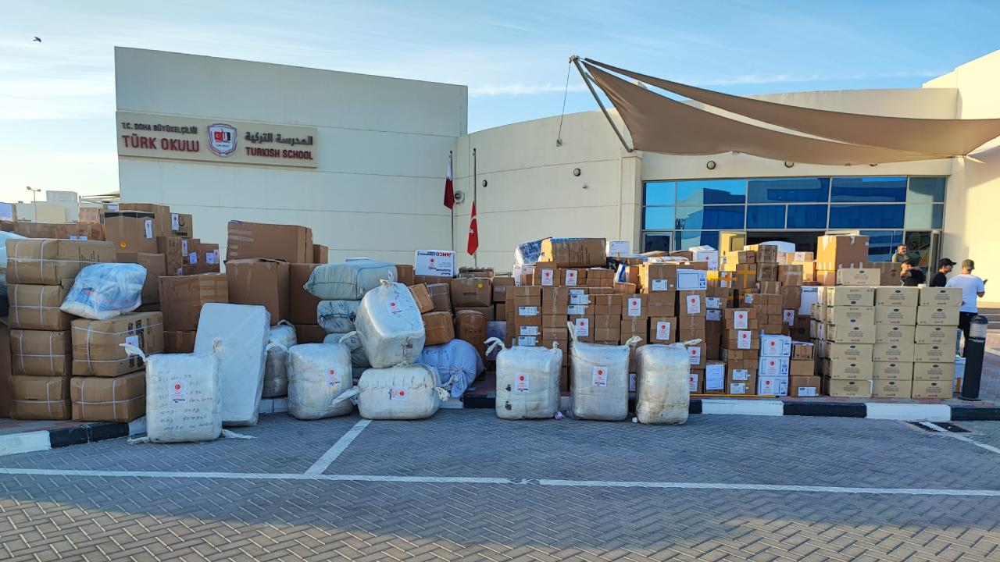

Britannica's definition of 'foreign aid' is "The international transfer of capital, goods, or services from a country or international organization for the benefit of the recipient country or its population." Critics argue that foreign aid is the modern way for wealthy nations to control the economies and policies of former colonies.
Foreign aid forces countries to wonder about the underlying motives behind the help offered, the real world impact, and the ethical balance between donors and recipients. Will the money reach those in need? Is this act truly about helping or about influence? Is this creating long-term strength or permanent dependency? Many argue that aid is a moral obligation based on human equality, but what about being fair?
Others wonder if it is morally flawed, countries only providing for underdeveloped countries for their own benefit. Aid is a powerful tool for good, but only if it is managed correctly and avoids creating a cycle of reliance. While foreign aid has the potential to provide life-saving relief and essential infrastructure, it only truly helps the poor when it is paired with strict transparency measures and long term strategies that prioritize local economic independence over permanent dependency.
Immediate Relief vs. Long-Term Independence
To begin, aid is a vital tool for immediate crises (like pandemics, natural disasters, etc.) to provide support towards countries in need. As stated by UNICEF, "Foreign aid increases global stability... boosts the U.S. economy, prevents global disease outbreaks..." Aid has been shown to help build stability, support families and reduce migration costs. Studies have shown that from U.S. aid alone around 2.3-5.6 million lives have been saved.
Beyond these numbers, this assistance acts as a strategic "early-warning system," stopping regional health threats before they reach U.S. shores. By addressing the main causes of need—such as famine and disease—aid helps prevent the social collapses that lead to extremism and mass displacement.
While aid itself is not inherently "bad," its most visible successes are often immediate humanitarian reliefs rather than the complex, long-term structural reforms needed for a nation's full economic independence. Ultimately, aid serves as a vital first step, buying the time and stability necessary for more permanent, self-sustaining development to take root.

The Transparency Imperative
To build off of that idea, aid is only effective if accompanied by strict transparency measures, as it often fails without rigorous oversight. Large inflows of non-tax revenue can unintentionally fuel corruption and "rent seeking" among local elites, who may divert funds for personal gain, rather than public good.
"An original and classic example of this occurred in Uganda during the early 1990s when a Public Expenditure Tracking Survey revealed that only about 13% of government education grants actually reached schools."
In response, the government launched a nationwide newspaper campaign to publish exactly when and how much money was sent to each district. This transparency was shown to empower parents and head teachers to hold local officials accountable, causing the share of funds reaching schools to skyrocket to over 80% by 2001. Ultimately, aid only truly helps the poor when it includes mechanisms like independent audits or biometric tracking to ensure that life-saving resources are not transferred off by corrupt officials.
Breaking the Dependency Trap
An important area regarding foreign aid is long-term strategies when handling aid. An example of this is the dumping of free or heavily subsidized foreign food, which lowers prices so much that local farmers can not compete, leading to bankruptcy and increased food insecurity.
Going beyond market displacement, poorly managed aid creates a "dependency trap" that stifles indigenous innovation and infrastructure. When local governments rely on a steady influx of foreign commodities, they lose the incentive to invest in the rural roads, irrigation systems, and research centers necessary for self-sufficiency. This creates a cycle where the recipient nation becomes a permanent importer of emergency relief rather than a producer of its own wealth.
To break this cycle, long-term strategies must prioritize institutional capacity building—training local experts and strengthening regulatory frameworks—rather than just delivering physical goods. For aid to help, it must transition from shipping foreign goods to local procurement or cash vouchers that circulate money back into the local economy.
Prioritizing Local Economic Independence
Lastly, prioritizing local economic independence over permanent dependency is important when handling foreign aid. Long-term aid is known to be able to go from being 'helpful' to becoming a drug (or a crutch) which allows countries to neglect changes needed in their country.
When countries take advantage of aid, as mentioned before, they won't do themselves any favors—instead, they'll rely on the other country to provide for them. Countries would only get like this due to poor governance—also known as neglectful leaders. Helpful aid should act like a jump-start for a car—just a little something to get things moving, but it is designed to eventually become unnecessary.
Conclusion
To conclude, foreign aid acts as a vital humanitarian tool for immediate crises and stability, yet its efficacy hinges on rigorous transparency in order to combat corruption and the implantation of long-term strategies that foster local independence.
To prevent creating dependency, aid must prioritize building local institutional capacity over delivering, which can stifle indigenous economic growth. A successful aid strategy focuses as a temporary transparent mechanism for development, not a permanent substitute for domestic growth.